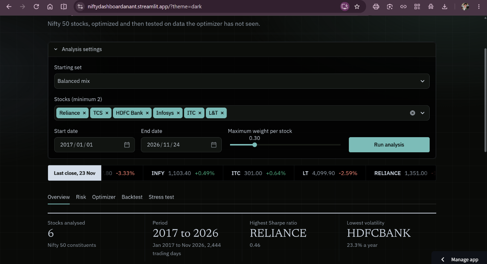
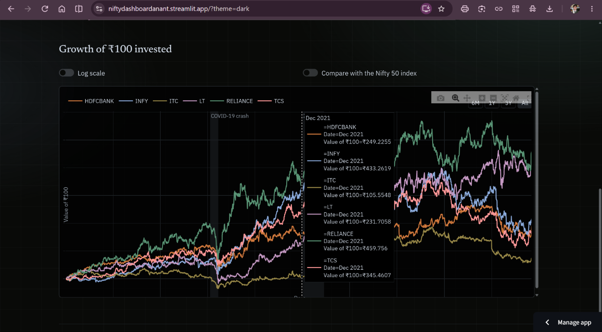
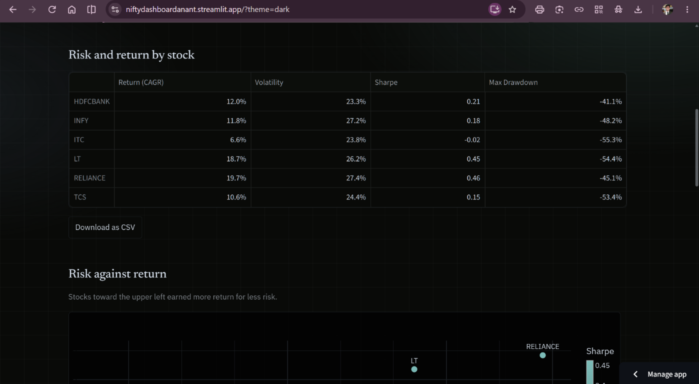
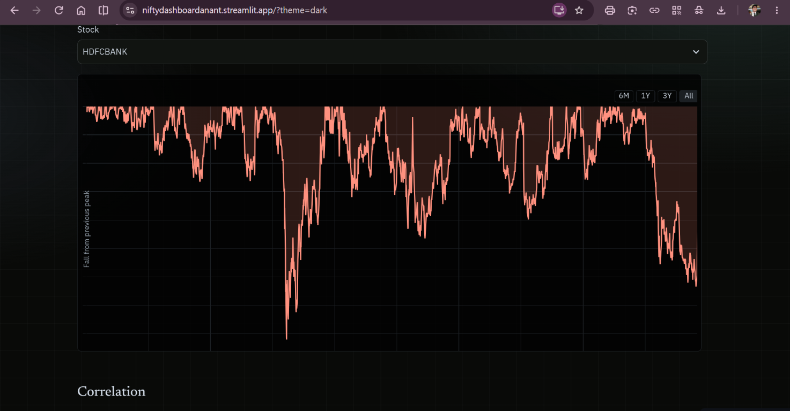

Configure a portfolio
Select Nifty 50 stocks, set a historical date range, and choose a maximum weight per stock before running an analysis.
Portfolio analytics / Streamlit
An interactive research dashboard for exploring risk and portfolio strategies across Nifty 50 stocks. Choose a stock set, date range, and maximum weight per stock, then run an analysis and inspect the results.
Overview
The dashboard brings historical market data and portfolio analysis into one interactive workspace. It includes an overview of portfolio growth and key risk measures, plus separate views for risk, optimization, backtesting, and stress testing. Users can also compare performance with the Nifty 50 index.
Live preview
Explore Nifty Portfolio Lab right here, or open the full dashboard in a new tab.
If the embedded preview doesn’t load, open the live dashboard.
Dashboard preview
A look at the portfolio setup, performance chart, and risk-analysis views.




What you can explore
Select Nifty 50 stocks, set a historical date range, and choose a maximum weight per stock before running an analysis.
Explore portfolio growth, risk measures, and stock-level comparisons in the dashboard’s overview and risk views.
Explore portfolio weights and evaluate strategies against historical data, including data not used by the optimizer.
Use the stress-test view to examine how portfolio results respond to different scenarios.
Historical results do not predict future performance. This is an educational project, not investment advice. The dashboard identifies Yahoo Finance as its source for daily closing-price data.